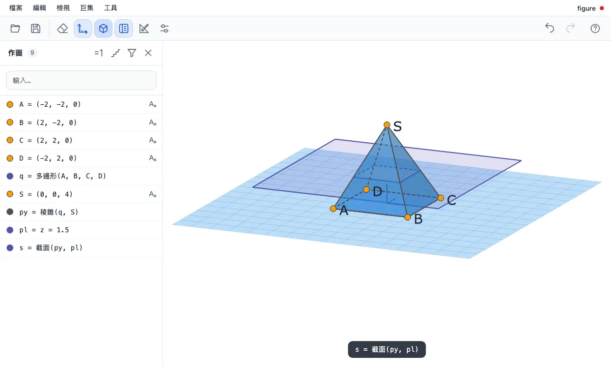

3D

進入 3D
- 新圖形是平面圖形。 3D 檢視使相機傾斜：圖形所在平面變為地面z = 0，座標系變為三面角。再按一次返回平面，並恢復原來的座標系。
-
只要有物件離開平面 z =
0，就不能返回平面；提示會指出該物件。反之，平面圖形不接受任何空間物件（
A = (1, 2, 3)、球…）。 - 每次切換都是一個復原步驟。
- DGPad 的 3D 圖形（其自由點位於螢幕平面內）沒有這個按鈕。
檢視
- 旋轉：右鍵，或單指在空白處拖曳。平移：左鍵在空白處拖曳。縮放：滾輪。
- P：透視或平行投影；S：地面。圖形分頁中有相同的設定。
- 被遮擋的部分（稜、圓、地面以下或面後方的直線）以虛線表示。
作圖
-
在空白處按一下會在地面上建立一個點；用鍵盤則輸入
S = (0, 0, 4)。 - 選單中增加平面和立體圖形兩個工具族以及兩種圓；點的工具環中會出現球。
-
所有需要平面的工具都接受地面：會建立一個隱藏的平面
z = 0，之後重複使用。 -
公式讀取全部三個座標：
d(A, B)是空間中的距離。
| 物件 | 指令 |
|---|---|
| 平面 |
平面(A, B, C)、平面(A, d)、平行平面(A, p)、垂直平面(A, d)、p = x + y + z = 3
|
| 平面的垂線 | 垂線(A, p) |
| 球 |
球(O, A)、球(O, r)
|
| 圓 |
圓(d, P) 以 d 為軸；圓(O, r, d)垂直於直線 d 或平行於平面 d
|
| 立體圖形 |
圓柱(A, B, r)、圓錐(A, B, r)、立方體(A, B, C)、稜柱(p, P)、稜錐(p, S)
|
| 截面 |
截面(s, p)：圓、圓錐曲線或多邊形
|
| 展開圖 |
展開圖(c, f)，f 從 0（摺疊）到
1（攤平）
|
| 交點與交線 |
交點(d, p) 點，交點(p, q)直線，交點(s, t) 兩球的交線圓
|
| 頂點 | 頂點(c, k)，k 從 1 開始 |
立體圖形
- 立體圖形是一個整體物件：它畫出面和稜（背面的稜為虛線），並遮擋其後的物體。在其輪廓內部即可選取它。
-
按兩次作立方體：同一平面或多邊形上的兩個點給出
立方體(A, B, p, ±1)，位於朝向相機的一側；同一高度的兩個點給出立方體(A, B, 1)，在上方（−1：在下方）。否則工具會等待第三個點。如果 [AB] 不再與該平面平行，立方體就變為未定義。 - 截面工具以任意順序接受立體圖形和平面。
-
把滑桿作為
展開圖的第二個參數可以產生展開動畫：f = 滑桿(0, 1, 0)、n = 展開圖(c, f)。